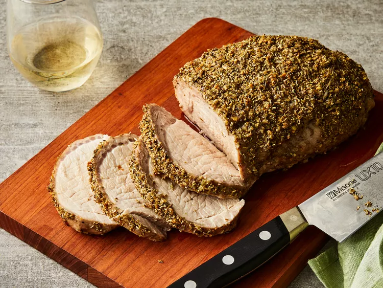

Roasted Pork Loin

Succulent pork loin with fragrant garlic, rosemary, and wine
If you're tired of dry and boring pork loin, then this is the recipe for you.
Not only is this Roasted Pork Loin heavily seasoned with garlic, rosemary, salt, and pepper, but it's also basted every 30 minutes with an olive oil and white wine pan sauce.
So, if you're looking for a way to use that boneless pork loin, this recipe will yield the perfect juicy and flavorful result that no one will be able to resist.
Don't get confused by their similar names, pork loin and pork tenderloin are actually two different cuts of meat.
The pork loin is wider, shorter, and flatter and comes from the back of the pig.
Pork loins can be boneless or bone-in.
While the pork tenderloin is long and narrow and comes from the muscle that runs down the pig's backbone.
Pork tenderloins are always boneless.
You may also see pork loins called pork loin roast, center-cut pork roast, center-cut pork loin roast, center-cut rib roast, center loin roast, or pork loin rib half.
Ingredients
- 3 cloves garlic, minced
- 1 tablespoon dried rosemary
- salt and pepper to taste
- 2 pounds boneless pork loin roast
- 1/4 cup olive oil
- 1/2 cup white wine
Steps
- Gather all ingredients.
- Preheat oven to 350 degrees F (175 degrees C).
- Crush garlic with rosemary, salt, and pepper in a mortar and pestle to make a paste.
- Pierce meat with a sharp knife in several places and press garlic paste into the openings.
Rub pork loin with the remaining garlic mixture and olive oil.
Set into an oven-safe pan.
- Place pork loin into the preheated oven, turning and basting with pan liquids every 30 minutes.
Cook until the pork is no longer pink in the center, 90 minutes to 2 hours.
An instant-read thermometer inserted into the center should read 145 degrees F (63 degrees C).
Remove roast to a platter and keep warm.
- Place pan onto the stove over medium-high heat and pour wine into it.
Heat wine and stir to loosen browned bits from the bottom of the pan. Simmer for 3 to 5 minutes.
- Slice pork loin and serve with pan juices.